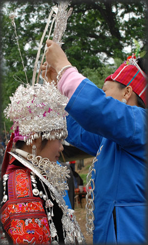
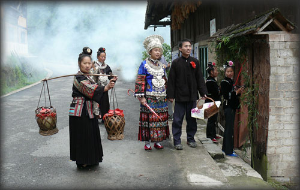

苗族古代婚姻曾经历过血缘婚、“普那路亚婚”，对偶婚和一夫一妻制等形态。实行一夫一妻制以后，婚姻缔结有自主婚和包办婚两种。结婚年龄一般在16 岁至23岁左右，男性婚龄稍比女性大些。苗族社会严格恪守着一夫一妻制和宗支之内，血族之外的婚制。苗族青年男女多是通过游方，双方自愿就可以互为配偶，建立家庭。其限制只要不是同宗共祖祭鼓（指有共同父系血缘关系的后代），就可以结婚。姨婊之间的子女均视为亲近同胞，禁止通婚。亲戚间不同辈份不能通婚。有的在历史上因婚姻或其它纠纷涉及诉讼，经发誓过不通婚。过去有些苗寨男女不与本民族中的不同方言的人通婚，通婚对象在本寨几个姓氏成员中选择。由于历史的原因，过去都不愿与不同民族通婚。有的苗族宗支甚至不愿与不同服饰的苗族结亲，宁愿到几十里甚至上百里以外的寨子里找服饰相同的苗族通婚。
台江苗族婚姻大都是当事人自主婚姻，其缔结方式可分为自主自由式、说合自由式和说合古典式三种。
自主自由式：是青年男女在“游方”活动中，通过自由恋爱结为夫妇的婚姻形式。从认识到结婚，完全按自己的意志行事，对自己的婚姻拥有绝对的自主权。这是当前苗族青年婚姻缔结的主要形式。
说合自由式：是经过亲友说合介绍，而双方又经过游方恋爱，自愿结合的婚姻形式。男青年在节日集会或平时游方中同女方相互认识以后，可请亲友前去说合，征得女方家同意即可定亲。此后，双方进一步加深了解，发展感情，条件成熟，便可结婚。
说合古典式（包含有关系婚、姑舅婚两种形式）：带有浓厚民族特色，至今仍流行于县境内，它均系男女双方及其父母都事先同意了的亲事。
上述婚姻缔结形式，除说合古典式外，都要经过游方、说合提亲、定亲择日、接亲等四个相同与不相同的过程。
游方：是青年男女自由恋爱和进行择偶的主要手段，可能是源于古代的对偶婚姻演变而来，并向一夫一妻制发展阶段形成的。“游方”虽属群婚的残留，但绝不是毫无道德的私合滥交，乃是主要传统习惯在道德规范下进行的。因此，无论男女进入游方场后，都要讲文明礼貌，必须遵守一些约定俗成的规章。
游方活动不是随处可以进行，而必须在特定的地点，苗语称“嘎打良庚”，通称为“游方场”。设多少“游方场”，则依寨内居住姓氏或宗族多少而定，若一个寨子同属一个氏族，小寨的则设一个游方场，大寨可设两个以上游方场。若多姓杂居，则各姓氏设各姓氏的游方场。总之，以同姓或同宗男女回避为原则。这些供青年男女社交活动的场所，一般设在寨边或寨中，讲究的设有石凳、木凳，栽有百年大树，因而这些地方被视为风景名胜之地。若农闲季节，游方频繁，白天亦在进行。为了礼貌，尊重女方寨子，不宜在寨中游方场谈情对唱，可择在离寨子不远而人能看得到的河边、路口、桥头、树下、草坪等地方，而不能在隐蔽之处进行。
为了方便青年男女社交和谈情说爱，苗族祖辈专给青年男女特定游方节日活动日期，如番召一带于农历二月、六月和七月这三个月，分别举行三次青年男女集体轮流坡会活动；坝场、宝贡、井洞塘、良田、革东等地，每年于农历二月十五日分别举行坡会（苗语称‘旧波’，近年有人外延为‘吃姊妹饭节’）；榕山、杨家寨于农历三月十五、十六日分别举行坡会（同上）；排羊、台盘于农历六月吃新节后，规定场期为青年男女进行“游卯”活动。
凡苗族青年男女年届十六、七岁，都有过游方活动。十八至二十岁左右最为活跃。当他们在各种公开的社交活动中，一旦情窦初开，本能地自然会产生对恋人爱慕之情。青年男女们不但与一向倾慕的对象畅抒情爱，连素不相识的异性也可以毫不拘束互相攀谈对唱，从中找到心心相爱的对象。他们通过吟唱显示歌才，披露心声，交流思想，建立感情，以自择婚配，因而婚后离弃极少。
青年男女游方有多种多样的时间与形式，各地不一。有的规定在节日才能进行，有的只许在节日的白天进行，有的只许在傍晚或晚间进行，有的可以在女方家里进行，有的只许在游方场上进行。活动最频繁是农闲季节，每到夕阳西下，夜幕降临后，最为活跃。过年和吃新节期间，游方场中，赶场路上，姑娘们象欢度节日那样，相邀成行。沿途穿着整齐的小伙子们，不管相识与否，不论旧交、新好，都可与她们对歌攀谈或寻觅知音，选择配偶。集镇街道旁，处处都见青年男女们聚谈的所在。在各种喜庆集会或插秧或打完谷子后，小伙子走村串寨游方活动，十天半月不归，也不带盘缠，所到之处，由姑娘招待。在对歌交往中，使青年男女都各有为数不等的朋友，有情者还结成情侣接至男家。
青年男女在初相会时，皆以群体活动为主，男女各在一方通报家门，即各自所属宗支以免误会。然后用自己的聪明智慧抓住对方的情思，一唱一答促进情感交融。对唱的内容为“相见歌”、“青春歌”、“赞美歌”、“相思歌”、“求爱歌”、“成双歌”、“逃婚歌”、“苦情歌”、“离婚歌”以及“分别歌”等。经过几次接触对唱来显示自己的才华，有的即兴编就随着感情的起伏而千变万化。彼此初步了解或互为对方相中，情意相投，方可离群自成一对，以歌为媒，倾诉心曲，商谈终身大事。
方白苗寨一带有种奇特的婚恋形式：一般姑娘长到十四、五岁后，父母让她单独居住在一个小屋里，屋壁上凿有能容纳人头一般大的孔，称为 “姑娘洞”或“望情妹洞”。洞口正对着姑娘枕边，入夜后，男青年分别来到各自意中的姑娘房外，隔洞谈心对唱。如果姑娘意中男方，就开门让他进屋坐在火炕一边双方彻夜对唱，倾吐受慕之情，家人必须回避。另有些村的苗族青年，夜间游方是在女方家门口或楼门边进行。一般女方家大门半开，男在外，女在内，相向唱谈，长夜倾诉；夜深后，征得女方同意，男青年们可到女方屋内围炕喁喁私语或对唱。关心自己女儿的母亲，有时还来指导女儿的歌路，以免唱输了。
在游方的过程中，男女双方经过多次的幽会谈心，加深了解，加深感情，彼此确实情深意笃，就可交换信物，互定终身。交换的信物，女的多半是手镯、项链，男的多是戒指、头巾或互换衣服。若在正式结婚之前，一方或双方感情有变化，不愿结合，信物可互相退还。
私订终身之后，有的双方各自将“机密”通过妯娌、兄嫂等渠道征求父母意见，有的则绝对保密，不让女方父母知道。若双方父母均欣然同意，则由男方父母托媒人到女方家提亲，把这门亲事定了下来。继而双方家庭商定迎娶日期。若双方或一方父母不同意，而这对青年却又情意绵绵，感情笃厚，一个愿嫁，一个愿娶，就不顾父母的阻拦，决定逃婚。有的则强行举行婚礼自成门户，也有的造成婚姻悲剧。
提 亲：提亲有两种情况，一般自主自由式婚均不提亲。因在情场上双方已交换了信物，互定了终身，暗地已择定结婚日期，确定接亲人等。有的为了双方老人皆喜，自主自由式婚也可通过妯娌、兄嫂等渠道征求父母央媒为之讨婚、提亲。这种情况有，但不多见。第二种情况是说合自由式与说合古典式婚，也即是关系婚和姑舅婚。说合式的关系婚，是男方认为有适合与自家儿子为婚的姑娘，就请家中老人健在，儿女双全，善于辞令，并与女家有些瓜葛关系的中老年妇女为媒，到女方家去踩门提亲，介绍男方家的情况和未来女婿的人品。开始时，女方家长不轻易放口允诺，需要征求舅家和房族意见。这时，一般不招待媒人，做出一副高傲样子，不然就失去体面。即使同意了，也要故意说一些搪塞的话，如“我家姑娘还小得很，还不懂得事，让她在家多待几年再说。”后经男家多次请提亲人反复说亲，才肯答应。
同意后，女方父母要设宴招待媒人，并赠她一双表示吉祥的彩礼带（特制的白布料或彩绸，宽四寸，长四尺，两头缀以缨须，经济条件差的则用棉花条代替）。还另备两条彩礼带，公、母鸡各一只，请提亲人带给男方家，作为同意缔结婚姻的彩礼，也就是等于订婚。以后女方如有反悔，男方则以这些礼物为凭，进行说理。二为说合古典式的提亲，苗语称“还娘头亲”。即姑妈的长女，舅家有优先娶接之权，如舅家没有儿子或年龄悬殊太大，征得舅家同意，甥女才能他嫁，但甥女婿必须通过一定程序给舅家一笔叫“外甥钱”的财礼。过去是一两二钱银子（代表一年十二个月），民国初年，改为十二块大洋。如果甥女不愿嫁舅家，财礼就出得更多。苗族爱情叙事诗《娥姣与金丹》唱道：“舅家的外甥钱呀，放在牛背上，牛背就要弯。放在马背上，马背就要断。放在桌子上，桌子就要垮”可见当时舅家要的财礼钱是十分惊人的，由于财礼钱要得繁多，使许多青年男女找不到美满的婚姻，造成逃婚和殉情等悲剧。
择 日：自主自由式婚，用不着再择日，双方在互定终身中，已自行商定迎娶日期了。说合自由式和说合古典式的关系婚和姑舅婚，男方家挑选男或女一至二人为证婚人，随同媒人到女方家去选择结婚日期。所带礼物是几封点心。仪式是：女方家杀公鸡一只，煮熟后，双方共同观看鸡眼，入夜时举行。这时，女方家堂屋正中摆着一张长条桌，其上端端正正地放着盛在碗里煮熟了的雄鸡 。舅舅坐在上位，两边各就坐着宾主。女方家长说完吉利话后，便毕恭毕敬地端鸡 给男方证婚人和提亲人观其鸡眼，然后依次递给在场的人看：如鸡的双眼睁闭一致者为吉，同意结亲。鸡眼左闭右睁不一致者，则预示克男方；右闭左睁则预示克女方，认为不吉利。一方或双方表示解除婚约，男方即把提亲时所收的彩礼带退还女家。如果双方家长执意包办到底，则不计鸡眼好坏，照样开亲，当一屋人专心看鸡眼时，女方家姑娘是很关心的，悄悄以耳朵贴着板壁窃听，若她喜欢这门亲事，当听到老人们称赞鸡眼时，心中就感到无比的高兴。姑娘不同意父母包办的亲事，听到鸡眼不好时，也是无比的高兴。有些姑娘不同意父母包办自己的婚事，在煮鸡时，就悄悄用木棍或筷子把鸡眼戳烂，让老人们无法分辨吉凶，包办不成。
看完鸡眼后，双方就协商一系列的结婚事项，如婚期，送亲和接亲人数等。结婚吉日，大都选在农历正、二月和八至十二月，这时是农闲季节，正适宜办喜事。结婚日期大多喜用卯、丑、子、午日，苗族认为这些日子的属象，象征着吉祥。忌讳在寅、申日举行婚礼。
婚期决定后，双方家庭即分别准备结婚事宜，如喂猪、酿酒，姑娘准备嫁衣等。
结 婚：结婚要数自主自由式的婚事最简朴，不用媒妁，不讲财礼，不讲条件。婚前，多瞒着老人乘“游方”连夜奔往男方家去。当双方喜期已届的那天晚上，新郎约双数密友，乘风清月明之夜，按事先约定的时间，到女方寨边的游方场上或双方约好的地点，便向新娘发出双方约定的信号，如打口哨、吹木叶、唱歌等等，总之千方百计不让惊动姑娘家的人发觉。因为情场上的结婚是姑娘背着父母逃婚去婚配的。为了避人耳目，保守秘密，男女双方来到游方场后，仍然和往常游方一样，对唱情歌，谈笑风生，没有半点透露逃婚的迹象。当游方到夜深人静时，即将做新娘的女青年才跑回家去，趁老少都已熟睡时，悄悄地拿走早已备好的衣裙、首饰和一把必带不可的雨伞（如果这时姑娘不慎，被父母发现，无法拿到东西，只好作罢），交给一两个知情的女伴悄悄先带出门，转交给来迎亲的新郎同伴。然后新娘象往常出去游方一样从容走出家门，径往与新郎约定的地点，便跟着男方和邀来的伙伴星夜赶往男方家。些时，新娘最相好的同寨姐妹们要陪同相送一程，一般送到途中便与新娘洒泪而别（南宫、交密一带送亲姐妹一直要送到男家，并住三夜才回）。送亲姐妹在半路分手时，新郎要取出一些钱分送给她们，以作酬谢，俗称“草鞋钱”。
走到新郎家村边，有的燃放鞭炮，一直燃放到新郎家门口，请新郎父母出来开门。无鞭炮准备的，则在寨边稍候，由迎亲伙伴飞报新郎家作好迎亲的准备。男方父母听到后，多数是很高兴地喊醒家中儿女，由新郎的妹妹或堂姐妹为迎亲主体，加上寨上的姐妹和房族组成，然后打开大门，把新娘迎进家来。接亲的主要仪式是接伞。接伞的人必须是新郎的小妹或堂 妹。无亲妹、堂妹则由新郎父母指定一与新郎同辈份的小姑娘去接。新娘走至大门，即由新郎的妹妹跨出门外迎接新嫂子，新嫂子接着用左手把雨伞递给接伞的妹妹，接伞妹妹接过新嫂子手中的雨伞后，新娘即用左脚跨进屋内，以示今后成为新家庭的主妇，并寓意早生儿在前。随即由接伞妹妹携新娘手迎入新房，迎亲妇女们陆续进入新房休息。新郎则不进家，各自到房族家去避羞寄宿，表示懂礼，对老人尊重。
当夜新娘嫁到新郎家以后，新郎父母于翌日早上杀鸡祭祀祖宗神灵，并宴请房族、寨老，表示给儿子接了媳妇，完成婚姻大事。
迎新娘进家的当天，新郎父母要请一至二名善于词令富有涵养的男人，带一活鸭悬于伞梢上，携一壶米酒，前往新娘家报信，央求认亲。并主动地代新郎新娘向女方家“认错”、“请罪”，明贬暗褒地数落男方家一通，请求息怒。如果女方家已了解男方家庭及社会关系等情况，同意开亲，即接受男方家送来的活鸭，设宴杀来招待报亲人，并邀请亲房、寨老一同欢宴。然后，双方定下新娘回门日期及应办礼品。若女方家不满这门亲事，有的则遭到父母的绝然反对，不但没有收下礼物，则不说话或声称不认得新郎家，甚至吵骂一番，拒绝接待报亲人，将报亲人带去的活鸭甩出门外。严重的还联合全族，杨言要把新娘拉回来，要打官司，断绝母女关系等等。在这种情况下，报亲者也不能离去，要尽量耐心，一而再、再而三的央求，最后实在不行了，就只好收场反回，如实向男家回报。女方家不接受的鸭子，报亲人只好提到寨中熟人或女方叔伯家去杀来请他们代为圆全这门亲事。经过报亲人的再三央求，新娘家老人自会通情达理，相得开。虽然骂上几句，以示女方家自尊，往往就在席间表了态承认了这门亲事。认了亲以后，新郎家就要尽力备办礼物，陪送新娘回门省亲。
说合古典式的婚姻——关系婚，姑舅婚的结婚礼仪最为隆重。这两种婚仪：有夜间举行的，白天举行的。按照苗俗，男婚女嫁都是整个家族的事，不只是由事主一家承担。因此，在举行婚礼的前一天，男女双方家庭都宾客盈门，热闹非凡。男方前往新娘家接亲人为双数（也有单数的），通常为十人以上，全是男的（新郎不得前往女方家亲自迎接新娘），有老有少。老的须配偶健在，有儿有女，续弦的不要。少的要父母双全。接亲人中，有两人担任主角：一是“司酒”，即男方的主婚人；一是“中人”，即男方的证婚人（革一、大塘一带的迎亲人当中，还要挑选两名出名的歌手在女方礼仪席上唱“婚礼歌”）。礼物是一只雄鸭、悬于伞梢上，由一年轻后生扛着在前同行。（革一片不用伞，而用一根全竹（有枝丫、梢和根）。这全竹必须青枝绿叶，不生虫，五尺长，根带泥，由一接亲后生用左肩扛着，中途不能换肩，以示今后新郎新娘有如竹子万古长青，永不变节。富裕之家的礼物当中，还有公鸡一只、杀后去毛留内脏的肥猪一头，猪头系有彩绸绣球一个；一担或两担高肩箩筐装有彩色糯米饭，每筐饭面上放彩蛋数十个，白瓷花碗两个，新制红色竹筷两双，一坛糯米酒，坛盖用红纸封固，由接亲人挑送到女方家。
是日，女方家迎客的中年妇女和老妈妈们，拿着酒海，提着酒壶，端着酒杯，从女家门口到寨边，筑成一道道“酒卡子”。接亲人一到，她们就开始敬酒（实际上是灌酒），有的才饮第一道“酒卡子”就醉昏了。到第二、三、四道“酒卡子”，就招架不住了。最难过是设在大门口的那道“酒卡子关”，大门内横架着一张长条桌，左右门枋各悬着一具能盛酒的牛角杯，接亲人一到，主人就揪住灌酒，但“司酒”和“中人”可以少喝，因为他们还有执行仪式的任务。
女方堂屋中摆着一至二张长条桌，靠神龛的一方摆有一只熟雄鸡（切成块，合成原样，大腿、翅膀和爪爪不能切断）；猪头、猪肝、猪腰、猪心、猪肺、猪脚爪（均盛于一木盆里）；一盆糯米饭；三碗酒。其余整个桌面，则摆满了丰盛的酒肉。正中座位坐着女方家长，右边依次坐着男方家“司酒”、“中人”及同行接亲者。左边坐着女方家“司酒”、“中人”及陪客的亲友。周围站着许多向接亲人献彩礼带的中、老年妇女及客人。
宾主坐定后，屋里鸦雀无声，女方家特请的司仪开始举行祭祀仪式，即以少许酒和供品捋于地上，接着赞颂：“今天是吉祥的日子，今夜是平安的夜晚。宾主坐满两边，人生最幸福莫过今天，最美满莫过今夜，金丹喜欢才成双，阿姣愿意才成对。祖先有礼在前，子孙照办在后。祝愿宾主两家亲上加亲，祝愿新郎新娘百头偕老。”
仪词毕，端两碗酒敬给双方的“司酒”，双方“司酒”默声同时起立，各自滴酒于地祭祖便行交怀着饮，司仪接着取出两只鸡腿，给双方“司酒”各人一只，互相交换，表示双方从此有吃有穿。/交换的鸡腿，放在桌上不当众吃。司仪再次给双方“司酒”各斟一怀，再次交杯，意即新郎新娘福寿双全。交杯毕，男方“司酒”从衣袋里掏出备好的一元二角钱双手呈送给女方“司酒”作为“礼金”。紧接着司仪同样给双方“中人”各端一碗酒，“中人”亦默声同时起立接酒，隔桌交怀。又取两只鸡翅膀递给双方“中人”，“中人”接后互相交换，意即双方从此搭好亲戚桥梁。
接着，女方家由一老人健在，有儿有女，有吃有穿的、有福的中年妇女向所有接亲人各拴两条又长又宽的彩礼带于腰间。这是女方家的主带，接亲人接受拴彩礼带时，都要饮酒两碗。然后，女方家族、亲友才给每个接亲人分别赠送各自带来的彩礼带，同时一一敬酒。彩礼带一律悬吊在主人家最先所横拴的主要彩礼带上，接亲人当中，如有与女方家房族或亲友有亲戚关系，则加系一条。因此，女方家族、亲友越多，敬献彩礼带也就越多，接亲人越感到光荣，女方家越感到体面。最后，每个接亲人的腰间都吊满了彩礼带，猛一看去，好象每人都穿上白生生的百褶裙，又象一株白花花的花树，满屋宾客都为他们欢呼喝彩。
拴彩礼带结束，接着就是房族和亲友向新娘赠送礼品，有的送钱，有的送衣服或布料。礼毕，宾主开怀畅饮，上了年纪的人，通宵达旦喝酒唱歌；接亲的小伙子则到游方场去和女方寨上的姑娘们交际玩乐。至亲的姐妹们则陪伴新娘，说惜别话，唱伴嫁歌，一曲曲，一首首，都是祝贺新娘成双对，幸福美满。此起彼伏，非常优美动人。
次日天将拂晓，接亲人仍齐聚一堂欢饮。接着男方“司酒”催促让新娘及早出阁，新娘动身前，亲族人都来送别。这时，女方家送亲人即向男方家接亲人索取“草鞋钱”，他们却故意不给，逗趣说：“早晓得你们要‘草鞋钱’，我们干脆一人买一双带来给你们穿，好送你们的姐妹。”送亲的女伴们听了，就进行搜身或脱下小伙子们的新衣服或取下他们的包头帕作抵押，一直等到大家逗趣够了，小伙子们才假装为难地把“草鞋钱”取了出来交给女伴们，又是一个高潮。
接着，举行出阁仪式：堂屋正中摆着一张长条桌，上面放着四碗酒，伯娘、叔妈或姨母以及亲兄弟姐妹围在桌子四周站着，新娘随即盛装走出闺房，面对大家站立着，新娘自知今生从此远离父母兄妹，不能朝夕侍候父母，不免悲从中来，泪流满面，依依难舍亲人。当亲哥弟之一，端酒上前向新娘敬上一碗送行酒，然后所有的兄弟姐妹同新娘喝告别酒。此时手足之间心中焉能不涌动酸楚离情，父母养育恩似海，尚未回报点滴竟要离别而去，哪个女儿会是铁石心肠，难免不洒下如雨之泪。新娘哭着对亲兄弟们说：“哥兄老弟们啊！爹妈把我养大，我却不能赡养老人，很对不起父母。我走以后，希望们你好好侍奉老人。”这时，人人流泪，个个啜泣。新娘随即向父母辞别。这时，妈妈含泪赠送姑娘一把布伞，路上遮风挡雨，沿途得以遮羞，新娘接过伞后，即用右脚跨出门槛，从此成了姑妈、和客边的人了。新娘手拿着伞在房族姐妹亲友的陪同下，离开家门；人们一直送至村外才含泪止步，极目远送。
新娘家打发的礼物是：杀后去毛不取内脏肥猪一头，活鸡鸭各一只；两担染有彩色的糯米饭，其上放着十几个染色的鸭蛋，两个白瓷碗，两双红色新竹筷，一坛酒。鸡鸭由一接亲小伙子悬吊于伞梢，扛着走在前面。其余礼物，分别由女方家挑抬至男家，其间，两担糯米饭中，留一担作为到男家祭祖先的供品：另一担糯米饭作为沿途分赠给观众的新娘饭。凡吃到新娘糯米饭者，都认为吉祥如意。
送亲的人数，最少八人，多时整个寨上的姑娘都去。其中一人是新娘的嫂嫂，她就是伴娘，代替新娘提花衣蓝，指导新娘履行礼仪。为了安全，女方家还要请本寨后生扛枪护送亲队伍到男方寨子附近，男家抬酒挑肉来招待，然后返回。
新娘来到新郎家门前，新郎家选一有福的中年妇女，用一块新面巾，先在盆里浸点水，然后在新娘的脚上拭了拭，表示洗尘。新娘把从娘家带来的花伞递给迎候在门内新郎的妹妹，然后用左脚跨进屋去，接着所有的送亲人才鱼贯而入，走进新郎家堂屋里。与此同时，新郎家指派专人接新娘家陪送来的礼物。火铳、鞭炮，从新娘进寨起，一直鸣放不停。
新娘用左脚跨进屋，表示从此成了新郎家的主妇，将花伞交给新郎的妹妹，表示姑妈的女儿嫁回舅舅家来了这一“还娘头”习俗的沿袭。
新娘进入堂屋后，由新郎的两个妹妹领至正堂东屋，一左一右地陪坐在着当中的新娘，三人的面都朝陈设祭品坐着，同时，她们三人的腿上，各覆盖着新毛巾，用以接礼品。举行结婚仪式时，新郎家堂屋摆设是：正中摆着长条桌，桌上放着一碗盛有三尾熟鱼，捏成坨的三坨糯米饭，煮熟的猪头、猪心、猪肝、猪腰、猪肺、猪脚爪和猪尾巴以及三碗酒。新郎家长面对供物就坐。一长者先倒一点酒并掐各少许祭品丢于地上，以示祭祀祖先。随即说吉利话：“今天是吉祥的日子，喜气的时辰，满屋宾主，无比高兴，祝愿新郎新娘，百头偕老，相爱相亲，养女美象花朵，生儿多如浮萍。”祝毕，长者即端酒一杯献给新娘，新娘不用手接，只用嘴挨一挨，即由送亲嫂嫂代喝。然后从碗里拿出三坨糯米饭分别给新娘和陪坐的两个妹妹每人名下一坨，放在她们三人覆盖腿上的新毛巾上面，接着又取出三尾鱼每人一尾，也同样放在她们三人的毛巾上，仪式毕。
仪式结束，即由新郎家的房族亲友向新娘敬献礼物和喜酒。这些礼物、喜酒均由送亲的嫂嫂代收、代喝。礼物中，有的是钱，有的是布料、绸缎，有的是银饰。
献礼结束，接着举行“挑喜水”仪式。新郎的妹妹引新娘去挑“喜水”，执行舀水是新郎的妹妹，舀单不舀双，一般舀三瓢；一瓢表示舀吉祥，二瓢表示舀富贵，三瓢表示舀子孙。这时都有许多青年后生跑到井边来故意逗趣，叮嘱新郎的妹妹舀满一点。新郎的妹妹拿着一把又大又深的木瓢，虽然只限舀三下，但却把水桶舀得满满的，新娘把水担上肩，大家就一齐注视着她，看她是不是会换肩；腰身是不是有劲？脚步迈得是不是轻巧？姿势是不是优美？赞叹声，逗趣声响成一片。
挑完“喜水”新娘又拿起扫把在地上扫了几下，又走到碓房去象征性地舂舂米等。
礼仪结束，即引新娘进入新房休息。不一会新郎家举行酒宴。送亲人的酒宴设在新郎家堂屋中，当中是长条桌，两边坐人，宾主对面畅饮对歌，桌上摆满佳肴，大家尽情地吃喝。另外，主人家还把从新娘家带来的“新娘饭”散给大家每人一坨，同时还在每个面前，放有一坨四四方方的熟猪肉。这些礼物，客人都不吃，带回家去，让人们知道主人家喜事隆重，礼节周到。
举行上述一切仪式和酒宴，新郎都不出面，他穿着朴素，象没事一样，各自上坡做活。
回 门：结婚日新郎与新娘不“拜堂”，又不同房，只是夫妻结合的象征，并不是夫妻同居建立的新家庭的开始。因此，婚礼后，新娘回门大都有两种情况。其一，双方家庭距离较近，新娘即随同送亲人返回娘家。其二，不管双方家庭距离远近，送亲人要留住一夜，第二天返回。新娘则在夫家住十三天后才回门。在这期间，新婚夫妇不得同房，新娘由小姑陪宿，若无小姑，就与婆婆同宿。这种习俗，表示新婚夫妇懂礼貌，否则，过早同房，人们就谈论他俩不懂事，遭到耻笑。
新娘婚后，经常回娘家住，这叫“不坐家”或“不落夫家”。究其原因是，因年纪还小或因娘家还需要劳动力，或因回娘家来赶制一生穿用衣物等等。但究其历史根源，是表现着从母居与从父居之争，是没落的母权制还在挣扎的体现。
新娘回门后，男家逢年过节，农忙期间，才由夫家母亲去接，没有母亲，则由姐妹去接。经多次来往，新夫妇才逐渐同房，称为“坐家”。

婚礼拾趣每年秋收后的农历九至十一月间，是台江苗族接亲嫁女的季节。这里苗族的婚礼，有着浓郁、古朴的民族特点。
设卡酒：婚期前一天，男方家要挑选接亲人到女方家去迎接新娘。接亲人为双数：全是男的，有老有少，老的须配偶俱在（忌续弦），并有儿女；女的要父母双全。这样新婚夫妇才能吉祥如意，美满幸福。在接亲人中，有两人担任主角：一称“起酒”，即迎亲的主婚人；二称“中人”，即迎亲证婚人。礼物是一只雄鸭，悬于伞梢上，由一年轻后生扛着同行。较为富裕者，礼物是雄鸭一只，杀后刮白的肥猪一头（不取五脏），猪额上系着红绣球一个。 接亲人到达女方村寨时，女方家的迎亲妇女，已提酒拿碗等候在门闾、路口、筑成一道道“酒卡子”，为接亲者洗尘。
接亲者一到，第一道“酒卡子”的妇女揪住就往嘴里灌酒，一般都要灌两大土碗，酒量小的接亲人，很快就被灌醉了，被灌的人越多，女方家就越高兴。最难通过的，是设在新娘家大门口的最后一道“酒卡子”。她家门栏上横着一张长条桌，门的左右悬着一只能装五至七两米酒的水牛角酒杯。每个接亲人都要被灌两牛角酒。经过这一关，接亲人已大部分被灌醉了，只有“中人”和“起酒”可以央求少喝。因为，他们要在婚礼仪式上去执行仪式。 “设卡灌酒”是苗族婚礼中第一个热闹场面，惊动全寨男女，人人皆大欢喜。
“草鞋钱”婚期的清晨，女方家宴请男方接亲人，男方“起酒”则催促女方家快点发亲送姑娘“出阁”。
这时，女方家的送亲人乘机向男方接亲人索取“草鞋钱”，意即酬谢送亲人。男方家早已备好草鞋钱交给接亲人带在身边了。但当送亲人来索取时，接亲的人故意不给，并逗趣地说：“早晓得你们要草鞋钱，我们干脆替你们一人买一双带来”。接亲的后生不给，送亲的姑娘和妇女就进行搜身，进而脱下后生们的新衣服，叫拿草鞋钱来赎。 讨“草鞋钱”非常风趣，逗得旁人哈哈大笑，笑出泪花花来。这样逗了一阵，最后，还是送亲的姑娘和妇女取得胜利，接亲的后生乖乖地交出“草鞋钱”。一列长长的送亲队伍，行进在蜿蜒曲折的山路上。
送亲队伍路过村寨时，苗家老少会出门来观看，此时，新娘打开花伞，不断地遮羞。
突然，路被树桠杈挡住了，旁边还有个树叶棚，大家一看就知道，这是放牛娃娃用来讨新娘糯米饭的，挑糯米饭的送亲人走近树叶棚，看棚里的松叶上放着几双筷子，就知道有几个放牛娃。于是他就用手捏几坨糯米饭和一两坨片猪肉放在筷子旁边。 挑喜水 新娘来到新郎家，作毕仪礼后，由新郎的妹妹带新娘到寨边最远的水井去挑“喜水”。新郎家的房族姑娘和送亲女伴一同前往。来到水井边，拿瓢舀水的是新郎的妹妹。一般五瓢为准。意为：一瓢舀吉祥；二瓢舀富贵；三瓢舀子孙；四瓢舀平安；五瓢舀家当。
水桶装满了新娘起肩挑水，大家看着她那起肩艰难的样子，发出一阵阵笑声。在路边、田间看热闹的妇女和后生们，也注视新娘换肩的动作灵不灵活，挑水的脚步轻不轻巧。
新娘挑“喜水”只挑一次。挑完后，新娘作象征性的舂碓，以示她今后能操持家务。舂碓结束，新郎家才请新娘进新房休息。